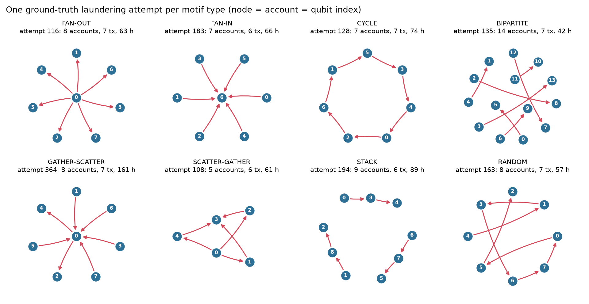
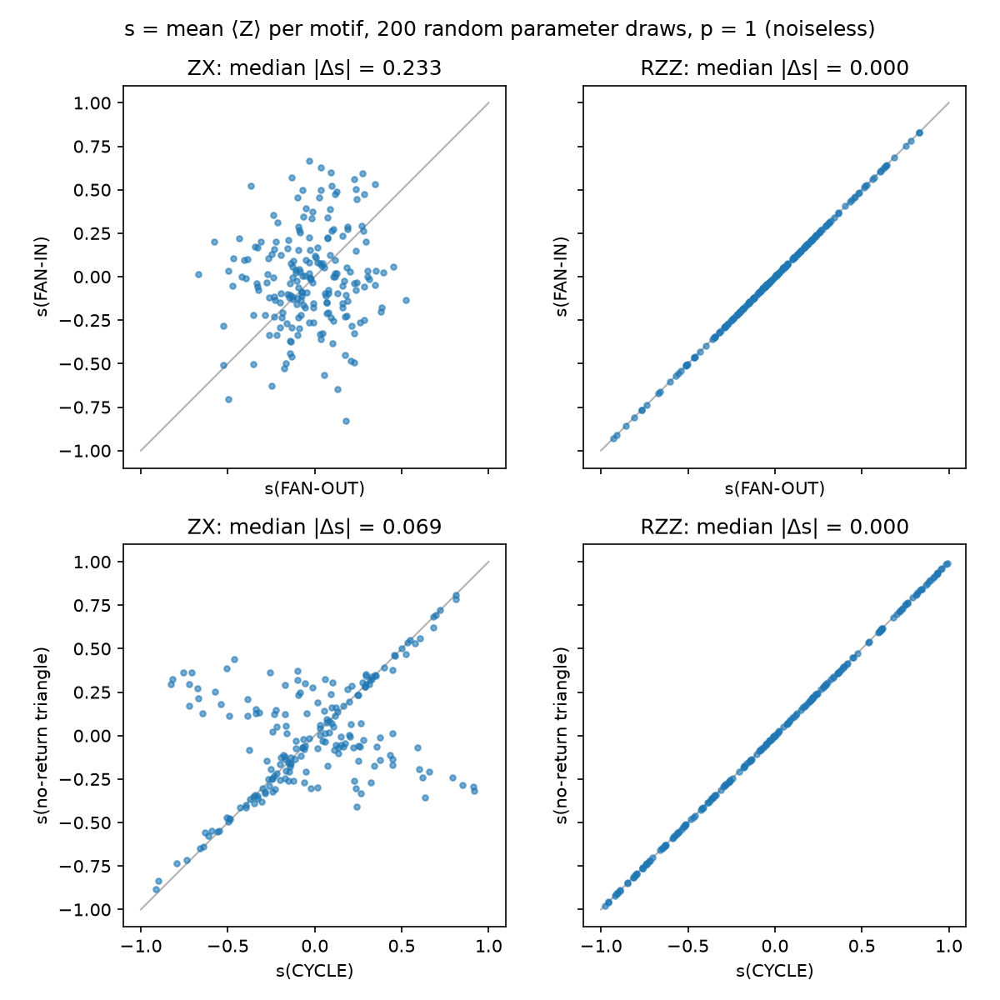
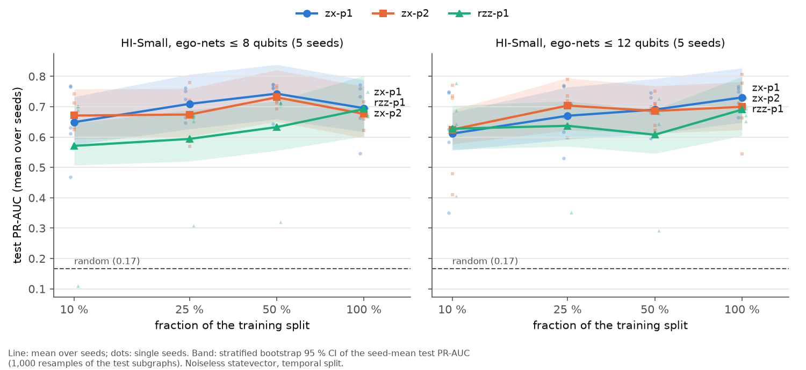

Small: 5 accounts (CYCLE) to 16 on average (STACK), up to 45
Slow: 21–129 h per attempt
Direction is the label: FAN-OUT and FAN-IN are the same star with the arrows reversed
Not time-ordered: in a real CYCLE, hop 4 happens before hop 3

One real attempt per type from HI-Small_Patterns.txt; node number = qubit index. Egressy et al. [2]: plain message passing cannot detect some of these directed motifs.
2 · Motifs · the decision (issue #1)
We chose option B: the circuit is the subgraph
A · motif features → quantum kernel
B · ego-subgraph → equivariant circuit ✔
Input
pattern counts per transaction, PCA to 4–16 numbers
a small directed subgraph, one qubit per account
Quantum idea
similarity in state space [10]
gates on the graph's edges; relabelling accounts only relabels qubits [9]
Data property used
imbalance
laundering = subgraph motifs
Expected benefit
a different kernel geometry, if any
symmetry built in → fewer labels needed, with only ~200 training positives
Effort / novelty
lower / lower
higher / higher
Option A's features stay as the classical baseline: XGBoost on 21 directed features of the same subgraphs
Settled with B: edge direction needs an asymmetric gate; negatives matched on size; noise breaks the symmetry, so we measure it
3 · Gates · graph → qubits
One qubit per account, one gate per transfer
Gate
Qubits
What it does
Used for
RY(φ)
1
rotates between |0⟩ and |1⟩
account feature: log total flow
ZX(θ)
2
payer reads, payee turns: directed
one per merged transfer
RZZ(θ)
2
phase if the two agree: symmetric
ablation only (Skolik [9], Verdon [8])
RX(c)
1
rotates about X
mixer at the end of a layer
H
1
swaps X and Z (H X H = Z)
compiles ZX into ZZ
CZ
2
flips the sign of |11⟩
Garnet's only 2-qubit gate, neighbours only
PRX(φ, α)
1
rotation in the X–Y plane
Garnet's native 1-qubit gate
⟨Z⟩
1
P(0) − P(1), from +1 to −1
readout: mean over accounts
Mapping: account → qubit · merged transfer → 2-qubit gate · time → gate order · amount → angle · shared weights → any relabelling gives the same score [9].
3 · Gates · why the non-symmetric one
A symmetric gate erases the arrow
RZZ · symmetric (Skolik [9], Verdon [8]) exp(−iθ Zu Zv)
Both ends only read: a phase if the qubits agree
Swap the ends → same gate: A→B = B→A
All RZZ gates commute → timing is lost too
ZX · directed (our choice) exp(−iθ Zpayer Xpayee)
Payer |0⟩: payee turns by +2θ; payer |1⟩: by −2θ
Swap the ends → a different gate
Does not commute at a mule (A→B→C) → apply in timestamp order, which never depends on account names
Same price on Garnet: ZX(θ) = Hpayee · ZZ(θ) · Hpayee → 2 CZ + PRX, exactly like RZZ. So the ablation compares the two gates at equal hardware cost.
Design decision: ADR 0001. Interactive version: edge-direction.html. We found no graph-QML paper with an asymmetric edge gate.
3 · Gates · evidence
RZZ cannot see direction for any weights; ZX can

200 random parameter draws, noiseless, no training
RZZ: FAN-IN = FAN-OUT and CYCLE = no-return triangle, exactly (|Δs| = 0 for every draw)
ZX: median |Δs| = 0.23 and 0.07
A property of the model class: no RZZ weights can separate these pairs.
Figure: scripts/direction_ablation.py. Unit tests check equivariance (|Δ| < 1e-10 under relabelling) and PennyLane / Qiskit parity.
4 · Pipeline
From 5 million transfers to 120 circuits on Garnet
1Load CSVdata.py5,078,345 transfers, temporal order, stable edge id
2Neo4j graphgraphdb.py1.59 M merged pairs; subgraph queries in ms
9Scoregarnet.py⟨Z⟩ from counts; same circuits on 4 backends
Temporal split (n ≤ 8)
positives
negatives
train: first 60 %
199
995
val: next 20 %
65
325
test: last 20 %
70
350
Positive: an attempt's accounts over its time window, normal transfers between them included. Bigger attempts are cut in time (171 cut)
Negatives: laundering-free, same split, matched on account count (exact) and gate count (±1): 1,399 ego-nets + 271 "pairs"
Trained only on the simulator; Garnet runs inference with the 7 weights bound
■ classical data · ■ quantum model (simulated) · ■ IQM Garnet. Walkthrough: pipeline.html.
4 · Pipeline · the model
Seven weights, whatever the graph size
Data property
Circuit choice
Mechanism
Account labels are arbitrary
shared weights a, b, w, v, c; mean ⟨Z⟩; readout α, β₀
permutation equivariance [9]: 7 parameters for any size
Direction carries the label
ZX: Z on payer, X on payee
A→B ≠ B→A
Money moves in time
gates in timestamp order
order uses time, never account names
87 % of transfers repeat a pair; amounts are heavy-tailed
one gate per pair, angle from log USD and count
shallow: 2 CZ per pair, not per transfer
5 · Why only 8 qubits
The chip's shape sets the size, not its 20 qubits
1 · Attempts that fit uncut (of 370)
≤ 441 %
≤ 853 %
≤ 1270 %
≤ 1682 %
≤ 2088 %
Median size: CYCLE 4, FAN-OUT 8, FAN-IN 9, STACK and GATHER-SCATTER 15. Past 8, coverage grows slowly.
2 · Garnet: square lattice, CZ to neighbours only
≤ 4 neighbours per qubit, no triangles. A 5-account FAN-OUT fits on QB10 + 4 neighbours; a 6th recipient needs a SWAP (= 3 more CZ). QB14 was out of calibration on 2026-11-06.
3 · Fit and circuit size
420 test circuits, n ≤ 8
0 SWAPs
median CZ
BIPARTITE · STACK · RANDOM
100 %
2–6
CYCLE
83 %
11.5
SCATTER-GATHER
57 %
16
FAN-IN · FAN-OUT
25 %
16–17
GATHER-SCATTER
9 %
17
all, n ≤ 8
69 %
8
all, n ≤ 12
63 %
12
Noise grows with CZ count: even at 8, Garnet is 0.022 off exact
Each test graph runs on 3 qubit sets (equivariance check): 19 live qubits give many more 8-qubit placements
Not a simulator limit: 2⁸ = 256 amplitudes; all 20 qubits ≈ 1 M, easy on a laptop
6 · What we learnt
Four lessons
1Gates and graphs
A graph becomes a circuit by rule; the gate decides what the model can see.
2Hardware shape
The coupling map, not the qubit count, limits the subgraph to 8 accounts.
3Calibration
The live chip is not the fake chip, and its qubits are not interchangeable.
4Classical vs quantum
Classical wins on accuracy and time at this size; the quantum value is the inductive bias.
6 · What we learnt · 1 / 4
Gates: how a graph becomes qubits
The mapping is a rule, not a design per graph: account → qubit, merged transfer → 2-qubit gate, timestamp → order, amount → angle. Any subgraph compiles with no hand work
The gate is the inductive bias. RZZ makes direction invisible for every weight; ZX lets it in at the same 2-CZ cost
Directed gates bring a new problem: order. They do not commute at a mule, so we need an order that ignores account names. Time gives one, and the equivariance tests pass (|Δ| < 1e-10)
Multigraph → simple graph. Merging repeats keeps 2 CZ per pair: 3 payments cost 2 CZ, not 6
Start state matters. A payee in |+⟩ is unchanged by X, so RY must come first or ZX does nothing

ZX − RZZ, test PR-AUC, n ≤ 8
~20 pos.
~50
~100
199
paired bootstrap [95 % CI]
+0.08 [+.02, +.14]
+0.12 [+.04, +.18]
+0.11 [+.05, +.17]
+0.00 [−.07, +.07]
Direction helps when labels are scarce; with all of them RZZ catches up via amounts and counts. 5 seeds, random = 0.17. qgnn_learning_curve.md
6 · What we learnt · 2 / 4
Hardware shape: why we stop at 8 qubits
Data graph ≠ hardware graph. Our gates sit on the edges of the transaction graph; CZ exists only on Garnet's 30 couplers. Every mismatch is a SWAP, and every SWAP is 3 more CZ
Laundering shapes fit badly. Hubs (FAN-IN/OUT, GATHER-SCATTER) need more than 4 neighbours: only 9–25 % fit with 0 SWAPs. Chains, pairs and stacks always fit
So the shape, not the 20 qubits, sets the budget. At 8 accounts: 69 % of circuits need no SWAP, median 8 CZ, depth 4
The cap is subsampling. 171 of 370 attempts are cut in time at 8 accounts; we report it
Platform limits too: Resonance takes at most 100 circuits per job, so we split into 2 jobs, each with its own calibration
What we would do next
Choose the subgraph so that it embeds in the lattice (pick neighbours by coupling map)
Report SWAP count per motif as a result (done for n ≤ 8 and n ≤ 12)
On a chip with more connectivity, the same circuit runs larger with no change to the model
6 · What we learnt · 3 / 4
Calibration: the live chip is not the fake chip
Chip calibration (IQM): qubits drift over hours; IQM re-tunes them and switches off the ones that fail. On 2026-11-06 QB14 was off and the rest were renumbered: circuits sent by index would land on the wrong qubits. We map by name; 35 of 120 circuits were re-transpiled
Readout calibration (ours): 2 circuits per job (all |0⟩, all |1⟩) give each qubit's error rates e0, e1: ⟨Z⟩meas = (1 − e0 − e1)·⟨Z⟩true + (e1 − e0) Errors shrink scores toward the middle, so classes look alike
It fixed the simulator, not the chip: |score − exact| 0.014 → 0.008 on IQMFakeGarnet, 0.022 → 0.023 on Garnet. The chip's error is gate noise and qubit-to-qubit differences
60 test graphs (10 pos.), 2,000 shots
PR-AUC
|score − exact|
relabel spread
exact state vector
0.732
0
0
noiseless, shots
0.733
0.004
0.007
IQMFakeGarnet
0.734
0.014
0.007
Garnet (real chip)
0.713
0.022
0.024
Garnet, readout-mitigated
0.713
0.023
0.025
No detectable loss on hardware (CI 0.45–0.92 vs 0.48–0.95). But the same graph on other qubits scores 3.4× more differently than shot noise allows: device noise breaks equivariance, and the noise model does not predict it.
Garnet 92.1 s is recorded wall time (queue 0). The training cost is an extrapolation, not run.
Test PR-AUC, n ≤ 8, all labels
value
XGBoost on 21 directed subgraph features
0.964
ZX circuit, 7 parameters (zx-p1)
0.695
RZZ circuit (ablation)
0.692
random (1 : 5)
0.17
Not shown: any advantage over classical. At 8–12 qubits the circuit is easy to simulate, so no speed claim is possible, and hand-made directed features win by 0.27.
Shown: the inductive bias works as designed (direction in the model class, 7 weights, helps with few labels) and survives real hardware. Next test: geometric difference [10], to ask if this feature space can beat every classical kernel on this data.
Real world
Any directed flow network has motifs
Anti-money laundering: an estimated 2–5 % of global GDP is laundered each year [13]
Fraud rings and mule networks: money fans in and out through mule accounts
Crypto: the same graph-ML task on real Bitcoin transactions [4]
Payments, supply chains: cycles and scatter-gather in directed, time-stamped flows
The recipe carries over: qubit = node, ZX gate = directed edge, gate order = time, shared weights = symmetry.
Backup · data
Negatives must look like positives
Every positive gets 5 negatives (1 : 5): imbalanced, but trainable
Same number of accounts (exact) and gates (merged transfers between two accounts, ±1)
Same temporal split; no laundering transfer anywhere in a negative
Otherwise the model can separate the classes by size or shape and never learn laundering.
Backup · data
Ego-nets cannot look like separate pairs
Before the fix, 82 of 370 positives (n = 8) got no negative at all: BIPARTITE 28/49, STACK 27/43.
Fix: build those negatives like positives, from a few unrelated normal transfers in a window as long as the attempt.
After: BIPARTITE 49/49, STACK 41/43 kept.
Backup · data
The dataset we train on
n = 8 (Garnet)
n = 12 (simulator)
Positives kept / 370
334
321
Attempts cut at the cap
171
106
Negatives (1 : 5): ego-net / pairs
1,399 / 271
1,340 / 265
Gate count matched exactly / within 1
76 % / 24 %
73 % / 27 %
Dropped: small or dense, no normal look-alike
36
49 (21 SCATTER-GATHER)
Train / val / test positives
199 / 65 / 70
190 / 63 / 68
Temporal split 60 / 20 / 20 by subgraph start time, as in [1, 2]: train on earlier, test on later transactions.
Account counts match exactly between classes. 88 of 370 attempts are a single account pair (1–2 transfers).
Backup
Known limits of the dataset
Subsampling: attempts above the qubit cap are cut in time
Drops: small, dense positives with no normal look-alike are removed: 36 at n = 8, 49 at n = 12, reported by motif
Tiny attempts: 88 of 370 attempts are one account pair with 1–2 transfers, as listed in the patterns file
Split boundary: no gap between splits; a subgraph that starts just before a cut can include later transfers
Window length: ego-net negatives look back 1 day; positives last as long as the attempt. The circuit uses timestamps only to order gates
Stricter negatives: no laundering transfer anywhere in a negative, not only at its center
Backup · leakage
The test period has a "laundering tail"
Normal traffic stops after day 9. Days 10–17 hold 1,108 transfers, and 59 % of them are laundering
That is 41 % of all transfer-level test positives: time or activity features find them for free
The circuit uses timestamps only to order gates, never as an input value
WP4 check on XGBoost: without the window-length feature, test PR-AUC goes from 0.964 to 0.960 (n ≤ 8, 5 seeds)
Toy graph, not from the dataset: a cycle, one transfer per pair. Trained zx-p1 parameters (n ≤ 8): a = 0.45, b = −1.59, w = −1.00, v = −0.62, c = 3.50, α = 2.85, β₀ = −0.62
(run file). Node angle a·f + b with f = log(1 + flow); edge angle θ = w·log(1 + USD) + v·log(count); here count = 1, so v adds nothing.
Code: circuit.py.
Appendix · comparison
Same training as logistic regression; only f(x) changes
product of 2ⁿ × 2ⁿ unitary matrices on a 2ⁿ state (256 numbers at n = 8)
Matrix entries
free weights
cos / sin of an angle; only the angle is trained
Nonlinearity
sigmoid
cos / sin of the angles, |ψ|² at readout, then sigmoid
Structure
any feature can combine with any other
gates only between accounts that paid each other, in payment direction
Loss, optimiser, metrics
cross-entropy, gradient descent
same: weighted cross-entropy, Adam, PR-AUC
The quantum part is the structure of f, not speed: at n ≤ 8 a laptop multiplies these matrices in microseconds.
The structure gives direction [2] and relabelling invariance with 7 parameters [9].
References
Altman et al., Realistic Synthetic Financial Transactions for Anti-Money Laundering Models, NeurIPS 2023 Datasets and Benchmarks.
Egressy et al., Provably Powerful Graph Neural Networks for Directed Multigraphs, AAAI 2024.
Weber et al., Anti-Money Laundering in Bitcoin: Experimenting with Graph Convolutional Networks for Financial Forensics, KDD 2019 Workshop.
Verdon et al., Quantum Graph Neural Networks, arXiv:1909.12264 (2019).
Skolik et al., Equivariant Quantum Circuits for Learning on Weighted Graphs, npj Quantum Information 9, 47 (2023).
Huang et al., Power of Data in Quantum Machine Learning, Nature Communications 12, 2631 (2021).